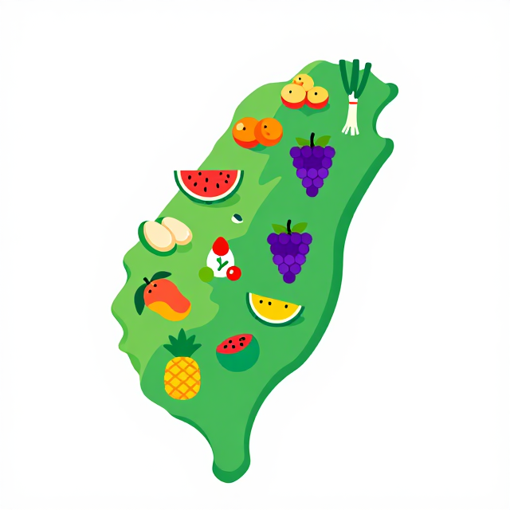

小農夫米米的
彩虹冒險
和米米一起認識 — 彩虹餐盤、在地食物、剛剛好!
🐰 🍅 🌽 🥬 🍇
起點
你早餐吃了什麼?
1
🍚飯/麵?
2
🥛牛奶?
3
🍎水果或蔬菜?
把手放在肚子上,感覺一下:今天有沒有吃飽?
你的肚子裡裝了 幾種顏色?
活動一
肚子的彩虹派對
認識彩虹蔬果,知道身體需要多樣食物
活動一・步驟 3
肚子像一個小氣球
氣球三種狀態圖(扁/剛剛好/太飽)
概念整理圖
肚子像一個小氣球
參考資料:
世界衛生組織 — 健康飲食實況報導
活動一・步驟 3 補充
每天要吃多少蔬果?
小朋友身高 + 兩個小拳頭 + 兩顆小蘋果插圖
概念整理圖
每天要吃多少蔬果?
資料來源:
世界衛生組織 — 健康飲食實況報導
活動一・步驟 2
米米的彩虹餐盤(5 色)
🍅
🌽
🥬
🍇
🥥
每種顏色都有不一樣的超能力!
全班念:「紅!黃!綠!紫!白!」並比五個手勢
參考資料:國民健康署 — 每日飲食指南、教育部「食在幸福」教案(MOE RAG)
活動二
食物從哪裡來?在地好朋友
認識在地食物,感謝農夫
活動二・步驟 3
什麼是「在地食物」?
在 地 食 物
🇹🇼 🍅
走 3 步
住在臺灣這片土地上
新鮮、不用坐很久的車
遠 方 食 物
🌍 ✈️ 🍎
走 20 步還喘氣
從很遠的國家來
坐船、坐飛機、卡車冒煙
互動:左手比「近」(手靠胸口) ・ 右手比「遠」(手伸遠遠)
參考資料:
農業部食農教育資訊整合平臺
活動二・步驟 3 補充
食物坐太久車會怎麼樣?
水果在卡車上累累的、卡車冒黑煙圖
交通比較圖
食物坐太久車會怎麼樣?
活動二・步驟 2
臺灣食物地圖 — 寶貝在哪裡?
臺灣島地圖+各縣市特色水果標註
使用正式臺灣底圖與教學標記

臺灣食物地圖 — 寶貝在哪裡?
資料來源:
農業部食農教育資訊整合平臺
活動二・步驟 4
謝謝農夫伯伯阿姨
農夫在田裡微笑揮手圖
概念整理圖
謝謝農夫伯伯阿姨
活動三
小小美食家行動
把彩虹、在地、剛剛好變成行動
活動三・步驟 1
有的小朋友吃不夠,有的吃太多
吃 不 夠
🍽️
空空的盤子
世界上有些小朋友
家裡沒有足夠食物
吃 太 多 糖 糖
🍬🍩
滿滿的零食
有些小朋友愛吃糖
忘記吃蔬菜
每一口食物都很珍貴,要選健康的。
互動:把手放在胸口,一起說「我會珍惜每一口」
參考資料:
世界衛生組織 — 健康飲食實況報導
活動三・步驟 2
米米的便當小祕密:3 + 2
便當盒分格圖,3 蔬果 + 2 主食
概念整理圖
米米的便當小祕密:3 + 2
活動三・步驟 4 ・學習單(投影版)
家庭小任務:菜市場找寶貝
回家以後,拉著爸媽的手到菜市場,找 3 種臺灣種的蔬果!
我找到的臺灣寶貝 1:
我找到的臺灣寶貝 2:
我找到的臺灣寶貝 3:
我認識的攤位阿姨/伯伯:
小美食家簽名:
爸媽簽名:
完整互動版見 worksheet.html
總結
三件大事,一起記住
第 1 件
彩虹
每天吃 5 種顏色
紅黃綠紫白
紅黃綠紫白
第 2 件
在地
選臺灣種的食物
新鮮又愛地球
新鮮又愛地球
第 3 件
剛剛好
裝剛剛好不浪費
珍惜每一口
珍惜每一口
我是小小美食家! 👏 米米最愛你們!